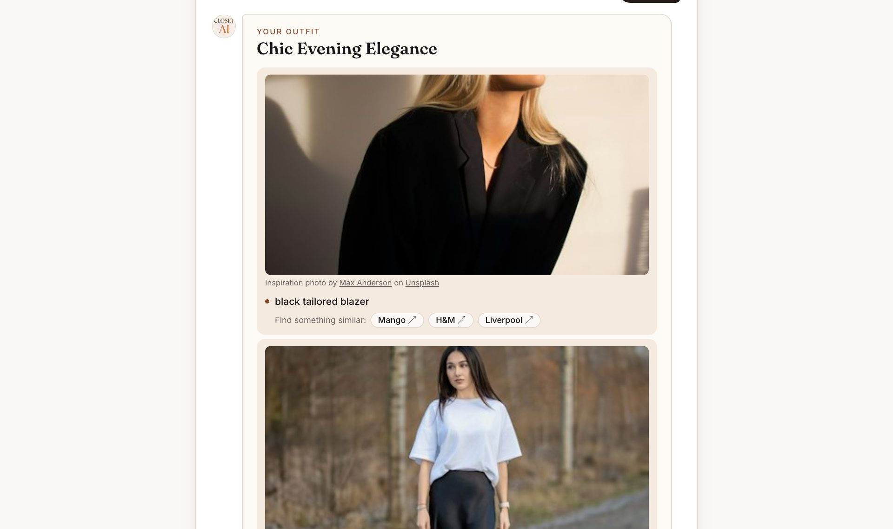
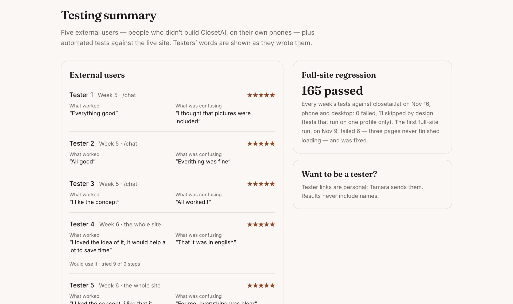

Antes de presentar: tus 5 pestañas
Martes 24 de noviembre · ábrelas en este orden y déjalas acomodadas. Durante el pitch solo das clic en la siguiente y hablas.
1

closetai.latDéjala arriba, en la portada. Para los puntos 1 y 2: nombre y propuesta de valor.
2

closetai.lat/pricingBájala un poco, hasta que se vean los 3 planes. Para el punto 3: modelo de negocio.
3

closetai.lat/dashboardDéjala arriba, con los números grandes. Para el inicio del punto 4: lo barato de la IA.
4

closetai.lat/chatPrepara un outfit antes: Women’s clothes → A date → Mexico City, cool → Elegant. Espera a que salga y bájala hasta el outfit. Para el resto del punto 4: tiendas y testers.
5

closetai.lat/demoBájala hasta “Testing summary”, donde están tus 5 testers. Para la conclusión y los 7 puntos. Déjala hasta el final.
- Cierra las demás pestañas (correo, WhatsApp, D2L) para que no salgan en el proyector.
- Comprueba que closetai.lat carga antes de que te toque.
- Si te preguntan por los pagos: “Payments work through Stripe, in test mode until we launch.”